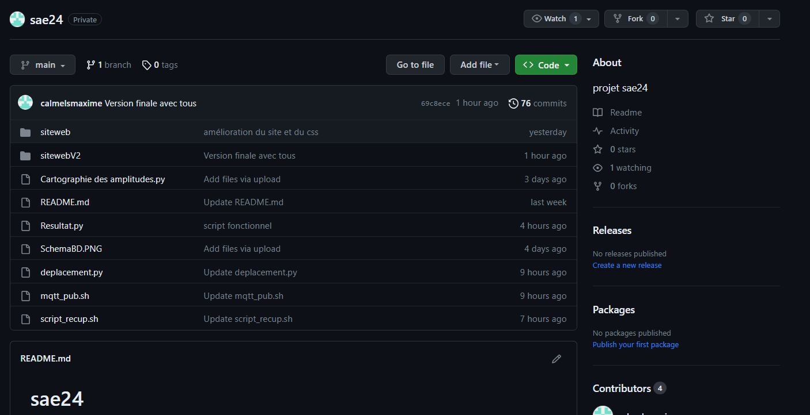
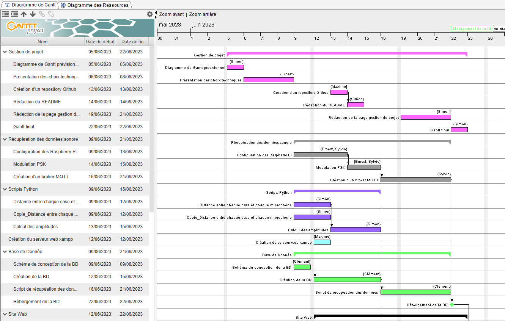
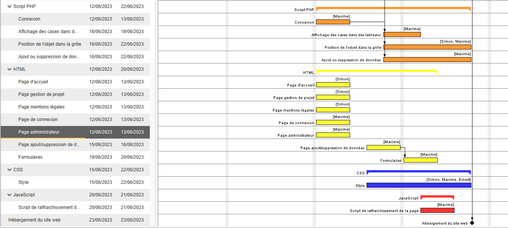

Bienvenue sur la page de gestion de projet ! Cette section regroupe toutes les informations essentielles relatives à notre projet, depuis sa planification jusqu'à son aboutissement. Vous trouverez ici un aperçu détaillé du GANTT final, qui offre une vision claire de l'évolution des différentes tâches et de leur interdépendance. De plus, nous avons inclus des captures d'écran des outils collaboratifs que nous avons utilisés tout au long du projet, afin de vous donner un aperçu concret de notre processus de travail. Chaque membre de notre équipe a également partagé une synthèse personnelle de son travail précis réalisé, mettant en évidence les réussites et les défis rencontrés. Nous avons identifié les problèmes auxquels nous avons été confrontés et proposé des solutions pour les résoudre efficacement. Enfin, vous trouverez une conclusion qui évalue le degré de satisfaction du cahier des charges. Nous espérons que cette page vous permettra de mieux comprendre notre projet et les étapes clés de sa réalisation.
Le diagramme de Gantt permet d'organiser un planning pour réaliser le projet petit à petit en planifiant des tâches à faire en un certain intervalle de temps. Voici notre diagramme de Gantt prévisionnel de notre projet réalisé sur le logiciel GanttProject :
Parmi les nombreux outils collaboratifs que nous avons utilisés tout au long du projet, GitHub a joué un rôle central dans notre gestion de projet. GitHub est une plateforme de développement logiciel basée sur le système de contrôle de version Git. Cet outil puissant nous a permis de collaborer efficacement en fournissant un environnement centralisé pour le partage, la gestion et la collaboration sur notre code source. Voici notre repository GitHub pour ce projet :

Grâce à GitHub, nous avons pu créer un référentiel centralisé pour notre code source, offrant ainsi un espace commun où chaque membre de l'équipe pouvait partager et travailler sur les fichiers du projet. Cette approche nous a permis de travailler simultanément sur les mêmes fichiers, tout en évitant les conflits de fusion. Les fonctionnalités de GitHub nous ont été particulièrement utile, nous permettant de résoudre les problèmes rencontrés tout au long du projet de manière collaborative. De plus, GitHub a facilité la revue de code en permettant des commentaires spécifiques sur les modifications apportées, ce qui a grandement amélioré notre processus d'examen et de validation. En résumé, grâce à GitHub, nous avons pu bénéficier d'une collaboration fluide, d'une gestion efficace des problèmes et d'un suivi précis des modifications, contribuant ainsi à la réussite globale de notre projet.
La base de donnée (BD) utilisée pour cette SAE est une base MySQL avec trois tables différentes, ces tables sont :
- Une table administration qui permet la gestion du ou des administrateur(s) avec une colonne login et une colonne mdp.
- Une table mesures dans laquelle on stocke toutes les amplitudes des 3 capteurs et la case réelle envoyée par le broker ainsi que la date et l'heure, avec cela on a ajouté un id qui est une clé primaire ainsi qu'une colonne processed pour vérifier si la valeur a été traitée par notre script.
- Une table resultat dans laquelle on stocke la case calculée pour les 3 capteurs avec un id qui est une clé étrangère et qui permet de relier les deux tables mesures et résultat.
Image de la Base de donnée
Voici ci-dessous l'image de la Base de donnée dans PhpMyAdmin
Voici ci-dessous le diagramme de Gantt final de notre projet :


Notre GANTT final diffère légèrement de notre GANTT prévisionnel initial. En effet, au cours du projet, nous avons dû faire face à des circonstances imprévues qui ont nécessité une répartition différente des tâches au sein du groupe. De plus, quelques problèmes sont survenus, ajoutant des défis supplémentaires à notre planning. Malgré ces ajustements, nous sommes fiers de mentionner que nous avons réussi à respecter dans l'ensemble notre GANTT initial. Nous avons travaillé avec diligence et discipline, que ce soit en autonomie chez nous ou lors de nos séances de travail à l'IUT durant les séances de SAE.
Clément : Impossible de récupérer les données depuis le broker (erreur parse) et mauvais type de données pour les amplitudes dans la base
Simon : Lors du déplacement, l'objet revenait sur les cases précédentes, ce qui superposait les points. Au moment de retrouver la case, plusieurs cases étaient associées à une même amplitude ce qui faussait le test. La base de donnée ne correspondait pas exactement aux scripts.
Maxime : Lors de l'affichage des données dans la grille dans la page consultation, le script a été compliqué à mettre en place. Le CSS a été un peu compliqué à mettre en place, car nous avons beaucoup de fichiers différents.
Sylvio : Mosquitto service ne se lançait pas au démarrage. Il fallait un bon format pour les cases dans le broker mqtt.
Ernest : Lors de l'utilisation de VNC, nous avons rencontré quelques problèmes. Après un redémarrage du Raspberry Pi, nous avons constaté que l'écran ne s'affichait plus sur le PC.Et quand nous nous sommes connectés via VNC, l'écran était excessivement zoomé, rendant le travail sur le Raspberry Pi quasiment impossible.
Nous avons rencontré plusieurs défis au cours de notre projet, que ce soit au niveau du style et des différents scripts mais aussi au niveau de la mise en place d'un broker mqtt et de la configuration du Raspberry Pi.
Clément : Problème de formatage du message sur le topic ("case" : 5 . 2), il fallait retirer les espaces entre les chiffres. Une fois résolu le broker fonctionne et le script peut récupérer et envoyer les données sur la base
Simon : Ajout d'une liste des 4 dernières cases et d'une condition pour que le déplacement ne s'effectue pas dessus. Changement de la manière de tester les amplitudes, en parcourant chaque case dans les 3 dictionnaires. Changement du nom de la colonne case en "case_value" et création d'une colonne "processed" pour vérifier si la valeur a été traitée par notre script.
Maxime : J'ai pris du temps pour bien comprendre et pour me documenter, notamment dans le cours pour savoir comment faire. J'ai synthétisé au maximum pour mieux comprendre.
Sylvio : Lancement de mosquitto service dans la crontab au démarrage. Problème de formatage du message sur le topic, il fallait retirer les espaces entre les chiffres.
Ernest : Pour résoudre ces problèmes, nous avons dû modifier le fichier de configuration du Raspberry Pi. Après avoir enregistré et fermé le fichier, nous avons redémarré le Raspberry Pi. Suite à ces modifications, l'affichage est revenu à la normale, et le problème de zoom sur VNC a également été résolu.
Au cours de notre projet, nous avons été confrontés à divers problèmes, mais nous avons su trouver des solutions efficaces pour les résoudre. Pour améliorer l'apparence et la mise en page, nous avons utilisé des outils de développement tels que l'inspecteur de navigateur et ajusté les styles des éléments problématiques.Nous avons consulté des ressources en ligne pour obtenir des explications détaillées sur nos problèmes spécifiques. En analysant attentivement les messages d'erreur de la console du navigateur, nous avons identifié et corrigé les erreurs de syntaxe. Dans l'ensemble, en faisant preuve de réflexion, de recherche et d'adaptabilité, nous sommes parvenus à surmonter ces obstacles et à répondre aux exigences du cahier des charges de manière satisfaisante.
Nous sommes extrêmement satisfaits du degré de réalisation de notre projet par rapport au cahier des charges initial. Malgré les défis rencontrés et les ajustements nécessaires, nous avons réussi à livrer un résultat qui répond à la majorité des spécifications et objectifs établis. Nous avons surmonté des difficultés techniques, résolu des problèmes complexes et trouvé des solutions adaptées tout au long du processus de développement. Bien que certains compromis aient été nécessaires comme l'abandon de la fonctionnalité de dégradation du signal, nous sommes fiers du travail accompli et de la qualité de notre produit final. Nous pensons avoir respecté l'essence du cahier des charges et avons pris des mesures pour fournir une expérience utilisateur agréable, une interface conviviale et des fonctionnalités fonctionnelles. Dans l'ensemble, nous estimons que notre projet a atteint un niveau de satisfaction élevé par rapport aux attentes initiales.
Difficultés ressenties
Cette SAÉ nous semble, après en avoir discuté avec les autres groupes, être la plus complexe car elle mobilise des connaissances dans quasiment tous les enseignements de l'année (programmation web, SQL, programmation script, gestion de projet, Linux...). De plus, les attentes sont particulièrement précises et poussées, l'implication nécessaire et le temps consacré est colossal, surtout pour un groupe où chaque personne n'effectue pas la tâche qui lui a été confiée à temps. Heureusement que nous étions 5 car le travail personnel a pu être réparti au mieux.
Note par rapport à la difficulté estimée des autres SAEs